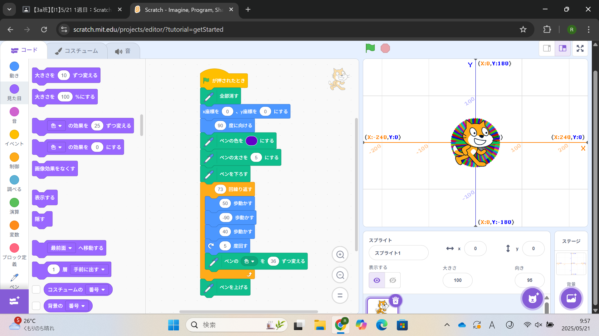
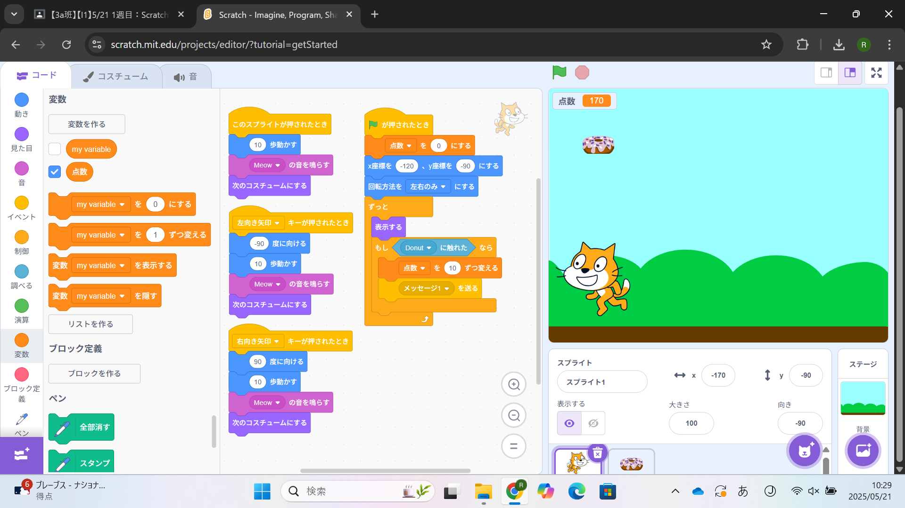

1週目のレポート ： 公大高専１年実習I-1
3a班3番 ValeriaTang
第1週目
1-1 サイエンスアート

1.内容
スプラウトの動きに合わせて線を引き、書くたびにその線の色を変えるプログラムを作成しました。
何歩動かして、何度回すかの組み合わせで、それぞれが違う形の円を描きました。
2.感想
scratchは小学生でも理解できそうなぐらい易しかったので、私も理解することができ、とても嬉しかったです。スプラウトの動きはとても速く、
人間の私には見ることができなかったので、スプラウトをゆっくり動かすというブロックを今度は探して使用したいなと、思いました。
1-2 ゲーム

1.内容
スプラウトが動くとコスチュームが変わるプログラムを作成しました。
スプラウトがランダムな場所から、ランダムの速さで落ちてくるドーナツをキャッチしたら、そのドーナツが消え、点数が10ずつ増えるプログラムを作成しました。
2.感想
ブロックを組み合わせてプログラムを作成するのも楽しかったですが、BGMや背景、スプラウトの顔を大きくしてみる等、
凝ったことをするのも楽しかったです。
1-3 ホームページ作成
私のホームページ
1.内容
あらかじめ用意されているテンプレートの文字だけを置き換えて、
2.感想
学習した内容を実践したときに自分が感じた感想を
自分で考えた文章で作成する（50文字以上．100文字程度を推奨．※生成AIを使ってはいけない）
各ページへのリンク
1週目のレポート
2週目のレポート
3週目のレポート
私のホームページ